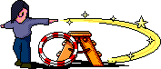

WebComponent/TypeScript Edition
toad.js brings some of the ideas from the TOAD C++ GUI library (UNIX/X11, macOS/Cocoa) to the web.
toad.js makes use of new web technologes like Custom Elements, Shadow DOM and JSX.
Development is happening in my spare time and focused on Safari, the Desktop and to support the development of workflow and makehuman.js. But it should basically work on any other modern browser.
<toad-menu>
<toad-menuentry name="file" label="File">
<toad-menuentry name="new" label="New">
<toad-menuentry name="empty" label="Empty"></toad-menuentry>
<toad-menuentry name="template" label="From Template"></toad-menuentry>
<toad-menuentry name="upload" label="Upload"></toad-menuentry>
</toad-menuentry>
<toad-menuentry name="open" label="Open"></toad-menuentry>
<toad-menuentry name="close" label="Close"></toad-menuentry>
<toad-menuentry name="logout" label="Logout"></toad-menuentry>
</toad-menuentry>
<toad-menuentry name="edit" label="Edit">
<toad-menuentry name="cut" label="Cut" shortcut="Ctrl+X"></toad-menuentry>
<toad-menuentry name="copy" label="Copy" shortcut="Ctrl+C"></toad-menuentry>
<toad-menuentry name="paste" label="Paste" shortcut="Ctrl+V"></toad-menuentry>
</toad-menuentry>
<toad-menuspacer></toad-menuspacer>
<toad-menuentry name="help" label="Help"></toad-menuentry>
<toad-menuentry name="settings" label="Settings">
<toad-menuentry name="account" label="Account"></toad-menuentry>
<toad-menuentry name="system" label="System"></toad-menuentry>
</toad-menuentry>
</toad-menu>
toad.action("file|logout", () => {
alert("You are about to logout")
})
toad.action("help", () => {
alert("Please.")
})
<toad-text model="hello"></toad-text>
<toad-text model="hello"></toad-text>
let textModel = new toad.TextModel("")
toad.bind("hello", textModel)
<toad-texttool></toad-texttool>
<toad-textarea model="markup"></toad-textarea>
<pre id="rawhtml"></pre>
let markupModel = new toad.HtmlModel("")
markupModel.modified.add( () => {
document.getElementById("rawhtml").innerText = markupModel.value
})
toad.bind("markup", markupModel)
<toad-button class="tx-default">Default</toad-button>
<toad-button class="tx-accent">Accent</toad-button>
<toad-button class="tx-negative">Negative</toad-button>
<toad-button action="hitMe">Hit me!</toad-button>
<toad-button action="hitMeMore" model="hello">I get my text from the model registered as 'hello'</toad-button>
toad.action("hitMe", () => {
textModel.value = "Hit me too!"
hitMeMore.enabled = true
})
var hitMeMore = toad.action("hitMeMore", () => {
textModel.value = "You hit me!"
hitMeMore.enabled = false
})
What is 6 × 7?
The answer to life, the universe and everything?
<toad-checkbox model="onoff"></toad-checkbox>
<toad-if model="onoff">
<p>What is 6 × 7?</p>
</toad-if>
let onoff = new toad.BooleanModel(false)
toad.bind("onoff", onoff)
<toad-text model="size"></toad-text>
<toad-slider model="size"></toad-slider>
let size = new toad.NumberModel(42, {min: 0, max: 99})
toad.bind("size", size)
<div style="display: inline-block; width: 45%; border: inset;">
<b style="font-size: 150%">Alice</b>
<toad-tabletool></toad-tabletool>
<toad-table model="books"></toad-table>
</div>
<div style="display: inline-block; width: 45%; border: inset;">
<b style="font-size: 150%">Bob</b>
<toad-tabletool></toad-tabletool>
<toad-table model="books"></toad-table>
</div>
class Book {
title: string = ""
author: string = ""
year: number = 1970
}
const bookList = [
{ title: "The Moon Is A Harsh Mistress", author: "Robert A. Heinlein", year: 1966 },
{ title: "Stranger In A Strange Land", author: "Robert A. Heinlein", year: 1961 },
{ title: "The Fountains of Paradise", author: "Arthur C. Clarke", year: 1979 },
{ title: "Rendezvous with Rama", author: "Arthur C. Clarke", year: 1973 },
{ title: "2001: A Space Odyssey", author: "Arthur C. Clarke", year: 1968 },
{ title: "Do Androids Dream of Electric Sheep?", author: "Philip K. Dick", year: 1968 },
{ title: "A Scanner Darkly", author: "Philip K. Dick", year: 1977 },
{ title: "Second Variety", author: "Philip K. Dick", year: 1953 },
]
class BookAdapter extends ArrayAdapter<ArrayModel<Book>> {
override getColumnHeads() { return ["Title", "Author", "Year"] }
override getRow(book: Book) { return refs(book, "title", "author", "year") }
}
TableAdapter.register(BookAdapter, ArrayModel, Book)
const model = new ArrayModel<Book>(bookList, Book)
bind("books", model)
<toad-tabletool></toad-tabletool>
<toad-table model="tree"></toad-table>
class MyNode implements TreeNode {
label: string
next?: MyNode
down?: MyNode
static counter = 0
constructor() {
this.label = `#${MyNode.counter++}`
}
}
class MyTreeAdapter extends TreeAdapter<MyNode> {
override getDisplayCell(col: number, row: number) {
return this.model && this.treeCell(row, this.model.rows[row].node.label)
}
}
TreeAdapter.register(MyTreeAdapter, TreeNodeModel, MyNode)
let model = new TreeNodeModel(MyNode)
model.addSiblingAfter(0)
model.addChildAfter(0)
model.addChildAfter(1)
model.addSiblingAfter(2)
model.addSiblingAfter(1)
model.addChildAfter(4)
model.addSiblingAfter(0)
bind("tree", model)